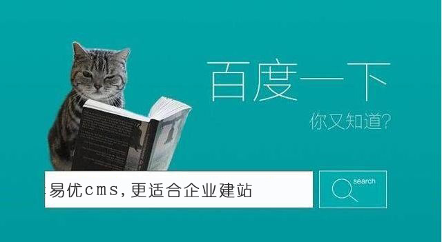
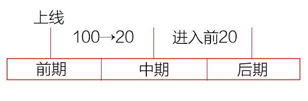

在网站的优化过程中，每个阶段都有每个阶段的优化策略，因为着重点不同，成长的方向就可能不一样，若在不同的阶段采取一样的优化操作，那么所带来的效果是不一样的。你在某个阶段去着重优化这个网站最需要的那一块，这个时候所带来的效果远远比你一直重复的去优化某项操作所带来的效果要好得多。
一、单一关键词或网站核心词的划分。
1、100以外。
核心关键词在100名以外，这个时候无外乎两种情况：一种情况就是这个网站是个新站，新站没有排名属于正常情况，不过有的时候也会出现网站刚上线一个月，立马就有了排名，但是过了一两个星期之后没有了排名，这也是属于正常情况的。若新站上线两三个月了，仍然没有排名，甚至是还没有进入到100名之内，说明你的网站在基础优化这一块有很大的问题。第二种情况就是你的网站是个问题站，以前有排名，现在没有排名。
2、20-100名。
（1）30-100名。
网站能够从100名之外进入到100名之内，说明你的网站信用是正常的，在这个阶段核心词会有一定的排名，而且围绕核心词的长尾关键词也有了不同程度的排名。
若基础优化没有问题，且不作弊，自然而然的会在第二三个月有一定的排名，在这个阶段网站的关键词排名是无差别的，比如说你今天排在了第50，明天排到了第40，这样的排名是无差别的，因为几乎不会有人去点击。
在这个阶段需要做的投票主要分为三种，内容得分投票、外链得分投票、流量得分投票。此阶段的流量得分投票起到重要作用，因此引流在这个阶段能够起到促进作用。
（2）20-30名。
在这个阶段更多的关注流量投票效果会好一些。该阶段差一点就进入前20了，但在这个阶段不能着急，需要时间去慢慢的推进，因为投票是有一个生效周期的，需要时间，可能需要两到三个月才会生效，排名到了这里可能是你之前的一些操作还没有生效。很多时候我们就会遇到这样的情况，一直在优化一个网站，但排名不见提升，但是换了一个人来操作，好像没有做些什么操作，但是排名提升了，这是因为之前那个人所做的优化操作到后面显示出效果来了。
3、前20名。
网站排名进入了前20这个阶段主要看的是用户的选择，用户喜欢看哪一个网站，搜索引擎就会把那个网站0427qy.com的排名提上来。在这个阶段注重外链和内容，效果已经不是很好了。
若核心词刚好排在了20，这个时候不要着急去搞点击和引流，因为之前的某些操作还没有生效，这些操作很有可能会把你的网站的排名推进前十几名。因此有些优化操作不要太过于着急，因为它需要生效时间，这也就是为什么优化需要时间的原因了。
我们在优化网站的时候，我们不能仅仅只是着重优化其中的某一个关键词，有的时候我们需要把握网站的整体关键词，你着重优化某一个单一的关键词，搜索引擎就是不把你排上来，那是因为你有特意优化某一关键词的嫌疑。

二、网站整体概况把握划分。
我们可以把一个网站的优化划分为前期、中期、后期。前期需要做一些基础优化，之后需要填充好内容，然后上线，上线之后排名从100过渡到20之前，是前期往中期推进的一个过程，进入前20之后，是中期往后期推进的过程。

1、前期。
上线3个月以内的网站都属于前期，不管你的排名如何，都属于前期。前期需要做的操作有哪些呢？
1、关键词分布。要做什么关键词，如何写标题，怎样分布关键词。
2、基础得分。
（1）加载。网站的速度如何。
（2）识别。代码识别、图片识别、链接的识别等。
（3）基础数据。索引、外链（友链、吸引蜘蛛外链）。
3、页面质量控制。
（1）页面相似度。
（2）站内内容与站外内容。
（3）站内内容与站内内容。
（4）代码。
2、中期。
（1）投票。
a、内容。内容的质量和数量。
b、链接。外链、内链就属于链接这一块的得分。
c、流量。流量对排名有提升作用。
（2）执行。
a、编辑。
b、外链。
c、流量（稳定流量、目标效果）。
d、跟踪效果。
之前你做了哪些操作，操作的效果如何，这些都是需要进行效果跟踪的。比如说发布了文章之后，文章的收录率如何，文章的排名如何，中期的话就需要对这些进行跟踪。到了后期更多的是去分析，比如说用户点击这篇文章有没有进入了另一篇文章之类的。
3、后期。
网站进入了前20，这个时候要侧重的就是网站长期稳定的排名，想要长期稳定的排名就需要一些必要的条件。
（1）长期稳定的必要条件。
a、持续的链接投票。
b、有价值的内容更新。
c、稳定的流量点击。
（2）必要操作。
网站到了后期更多的是要考虑效果的问题了，慢慢的转入运营的阶段，主要为产品、售后、服务、业务流程、品牌等。这个时候排名上去了，就要考虑到用户进入到你的网站会不会购买你的产品，需要去做一些口碑、品牌方面的推广。说到底，后期的优化操作跟排名没有多大关系，但是跟你网站整体有关。
三、网站当前实际情况的把握。
1、新站。
主要看基础优化有没有做好，网站在搜索引擎的信用度如何，是否作弊了，新站不要怕没有排名，只要做的正确，搜索引擎会慢慢的把你的排名推上去。
2、老站。
优化做了好几年了，之前有排名，但之后就没有排名了，那就是出问题了。老站出问题比较难处理，因为你的优化方向可能一开始就一直是错误的，长期的积累就很麻烦，若要恢复是需要很长时间的。
3、问题站。
基础优化不到位，优化方向有问题，作弊等情况都会导致问题。
总结：网站在优化过程中会经历前期、中期、后期三个阶段，在每个阶段有不同的特点，要根据这个不同的特点来采取不同的优化操作才能发挥最大的效果。